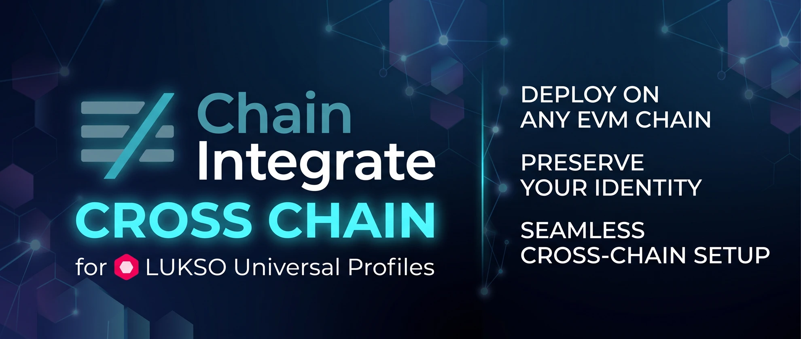

UP Deploy Cross-Chain
English
0 · Perché serve
1 · Rete
RPC URL custom
Explorer URL custom (opzionale)
2 · La UP
Leggi l'indirizzo dalla tua UP (estensione o app)
Indirizzo della UP
3 · Il controller che firma (MetaMask)
Connetti il controller della UP (MetaMask)
Non connesso.
4 · Controller della UP su questa rete
Leggi i controller della UP su questa rete
Controller non ancora letti.
Indirizzo del controller di backup (un account MetaMask diverso, custodito a parte)
Aggiungi il controller di backup
— oppure, per UP Wallet: app Android o estensione del browser —
Indirizzo della chiave del dispositivo (lo mostra l'app, pannello "Questo telefono", o l'estensione, pannello "Questo computer")
Autorizza il dispositivo su questa rete
— oppure, dopo aver perso una chiave —
Controller da rimuovere
Confermo: questa chiave è persa o non mi serve più. Il controller connesso nel wallet resta e continua a gestire la UP.
Rimuovi il controller selezionato
Copia il log